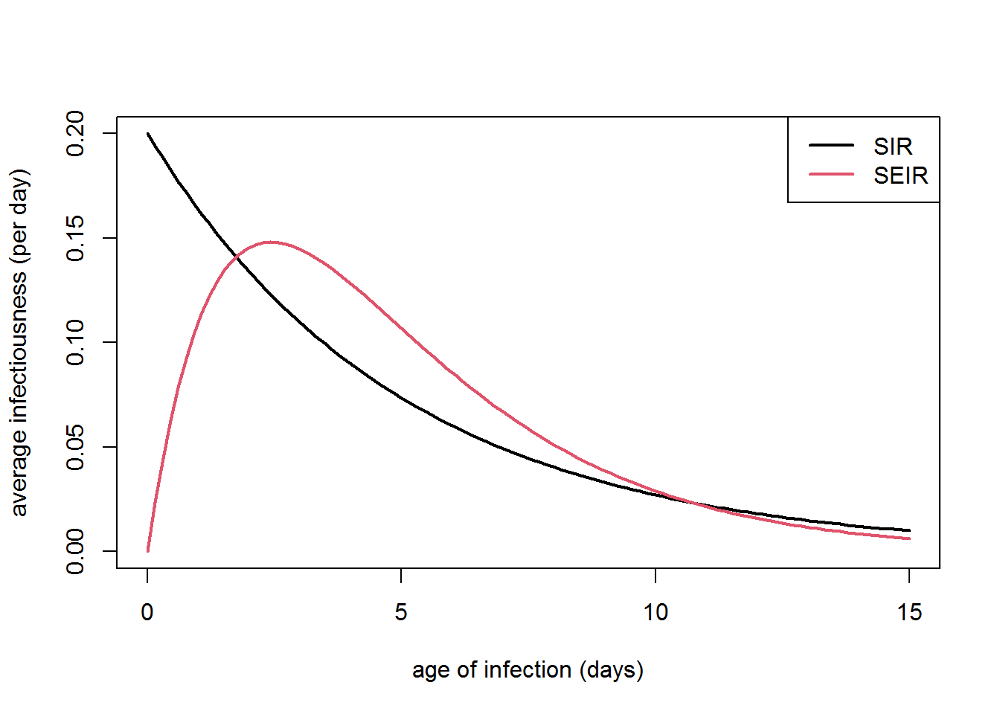

Topic 4. Kermack-McKendrick model
\[ \newcommand{\vect}[1]{\boldsymbol{\mathbf{#1}}} \newcommand{\R}{\mathcal{R}} \newcommand{\Reff}{\mathcal{R}_\mathrm{eff}} \newcommand{\inc}{\mathrm{inc}} \]
1 Motivation
A major limitation of the SIR model introduced in Topic 2 is that individuals are infectious immediately after getting infected, and remain infectious for an exponentially distributed period of time. The Kermack-McKendrick model removes this restriction by allowing the average infectious to be specified as an arbitrary function of time.
Before getting to the general Kermack-McKendrick model, we will look at the SEIR extension to the SIR model.
2 Susceptible-exposed-infectious-recovered model
In Topic 2, we studied the SIR model where people become infectious immediately after getting infected. In reality, for many diseases there is a lag between getting infected and becoming infectious. This motivates a common extension to the SIR model known as the SEIR model, for susceptible-exposed-infectious-recovered. This model has an extra compartment, called the exposed compartment (or sometimes the latent compartment), for people who have been infected but are not yet infectious.
Written in terms of fractions of the population, and assuming that the total population size \(S+E+I+R\) is constant, the SEIR model consists of the following system of ODEs.
SEIR model
\[ \begin{align*} \dot{S} &= -\beta SI \\ \dot{E} &= \beta SI - \alpha E \\ \dot{I} & = \alpha E - \gamma I \end{align*} \tag{1}\]
Compared to the SIR model, this model has one extra parameter, \(\alpha\), which is the transition rate from the exposed to the infectious compartment. The mean time in the exposed compartment is \(1/\alpha\), which is known as the latent period.
The SIR model is a limiting case of the SEIR model with \(\alpha\to\infty\).
2.1 Similarities and differences between SIR and SEIR
The SEIR model has some difference from the SIR model, but also shares many of the same characteristics. For example, the SEIR model’s basic reproduction number \(\R_0\) and final epidemic size have the same dependence on the parameters \(\beta/\gamma\) as for the SIR model. The main difference is that, because of the delay between being infected and becoming infectious, the time scale for the epidemic is correspondingly slower. However, for many purposes, the dynamics of the SEIR model will look very similar to those of a SIR model with the same value of \(\R_0\) but smaller values of \(\gamma\) and \(\beta\).
| Property | SIR model | SEIR model |
|---|---|---|
| \(\R_0\) | \(\beta/\gamma\) | \(\beta/\gamma\) |
| Final size \(z\) | \(1-z=e^{-\R_0 z}\) | \(1-z=e^{-\R_0 z}\) |
| Mean infectious period | \(1/\gamma\) | \(1/\gamma\) |
| Mean latent period | 0 | \(1/\alpha\) |
| Mean generation interval | \(1/\gamma\) | \(1/\alpha+1/\gamma\) |
| Infectiousness \(f(\tau)\) | \(\beta e^{-\gamma \tau}\) | \(\beta\frac{\alpha}{\gamma-\alpha}\left(e^{-\alpha\tau}-e^{-\gamma\tau} \right)\) |
In the SIR model, because individuals leave the infectious compartment at rate \(\gamma\), the proportion of a cohort of individuals infected at the same time that are still infectious some time \(\tau\) later is \(e^{-\gamma \tau}\). This implies that the time between getting infected and infecting someone else (called the generation interval) is exponentially distributed with mean \(1/\gamma\). The force of infection exerted (per individual in the cohort) is \[ f(\tau) = \beta e^{-\gamma \tau} \] We will refer to this function as the infectiousness at age of infection \(\tau\).
The fact that infectiousness is an exponentially decaying function means that it is at its highest at \(\tau=0\): most transmission events occur relative soon after being infected, and these gradually taper off over time. In reality, for many diseases, the likelihood of transmitting the disease is initially very low after being infected, and gradually increases over time before eventually tapering off. As we have seen above, in some situations the distinction is unimportant. For example, if the main output of interest is the final epidemic size or the overall size an shape of the epidemic curve, these can be obtained from an appropriate SIR model.
However, in some situations, the assumption of an exponential generation interval distribution is overly restrictive. For example, if we are interested in the effect of interventions, such as case isolation, that prevent or reduce transmission events occurring after a certain time, then it is important that the model has the correct distribution of transmission times.
The SEIR model partly address this limitation, but imposes restrictions of its own. The infectiousness in the SEIR model is given by \[ f(\tau) = \beta\frac{\alpha}{\gamma-\alpha} \left(e^{-\alpha\tau}-e^{-\gamma\tau} \right) \] (see Figure 1 for example). This expression may be derived by calculating the proportion of a cohort that has exited the exposed compartment and has not yet exited the infectious compartment after time \(\tau\).
Although the SEIR infectiousness function may be an improvement over an exponential distribution, notice that the force of infection still increases immediately after \(\tau=0\) meaning that there will still be some transmission events that occur relatively soon after infection. There are ways around this. For example, it is possible to have a series of exposed compartments \(E_1,E_2,\ldots\) through which individual must pass before becoming infectious. This gives a force of infection that increases sigmoidally before peaking and then coming down.
However, a more general approach to specify the infectiousness as some user-specified function of age of infection \(\tau\) since infection. This is the basis of the Kermack-McKendrick model.
Infectiousness profiles
It is worth commenting here that the time-dependence in the infectiousness function \(f(\tau)\) can be interpreted in one of two ways:
- \(f(\tau)\) represents the probability of being in an infectious state at age of infection \(\tau\), multiplied by the infectiousness in that state.
- \(f(\tau)\) represents the infectiousness of an individual at age of infection \(\tau\), for example modelling the rate of pathogen shedding as a function of time (which could be related to a a model of the within-host dynamics).
For the SIR and SEIR models, the first of these is the more natural interpretation as these models are formulated to have a single infectious compartment with a constant transmission coefficient \(\beta\). The Kermack-McKendrick model we will introduce below does not have this restriction, and the second interpretation is perhaps the more natural.
In either case, \(f(\tau)\) is the average infectiousness of a cohort of individuals (meaning the average number of transmissions per unit time in a fully susceptible population) with age of infection \(\tau\). It is often sufficient to just assume the aggregate infectiousness function is \(f(\tau)\) and we can be agnostic as to the precise nature of the mechanism that is responsible.
3 Kermack-McKendrick model
Suppose that infected individuals exert an average force of infection \((1/N)f(\tau)\) where \(\tau\) is the age of infection. The function \(f(\tau)\) is equivalent to the average number of transmissions per unit time from a single infective with age of infection \(\tau\) in a fully susceptible population, and we will refer to it as the infectiousness.
The aggregate force of infection \(\lambda(t)\) at time \(t\) is found by integrating over the number of people infected (i.e. the incidence) at all previous times \(t-\tau\), weighted by the infectiousness at the current time \(f(\tau)\): \[ \lambda(t) = \frac{1}{N} \int_0^\infty \inc(t-\tau) f(\tau) d\tau \] where as before \(\inc(t)\) is the incidence rate (i.e. the rate of new infections per unit time) at time \(t\).
We see from this that, unlike the SIR and SEIR models where it is sufficient too keep track of the compartment sizes at a single point in time, the more general Kermack-McKendrick model requires us to keep track of the history of incidence up to time \(t\). In other words, the Kermack-McKendrick model is not a Markovian model: it depends on the history of the process not just its current state.
As in the compartment-based models, the incidence \(\inc(t)\) at time \(t\) is the product of the force of infection \(\lambda(t)\) and the susceptible population \(S(t)\). We therefore have the following model definition.
Kermack-McKendrick model
\[ \begin{align*} \dot{S} &= -\inc(t) \\ \inc(t) &= \frac{S(t)}{N} \int_0^\infty \inc(t-\tau) f(\tau) d\tau \end{align*} \tag{2}\]
The second of these equations is sometimes referred to as a renewal equation as it describes how “birth” of new infections at time \(t\) relates to previous infections.
Note that the integral in this equation may be truncated at finite \(\tau\) if the generation interval distribution has zero probability above some upper limit \(\tau_\mathrm{max}\).
The SIR model is a special case of the Kermack-McKendrick model with \(f(\tau)=\beta e^{-\gamma \tau}\). To see this, note that taking the Laplace transform of the SIR model equation \(\dot{I}=\inc-\gamma I\) shows that \[ I(t) = \int_0^\infty \inc(t-\tau) e^{-\gamma \tau} d\tau \] Hence, if \(f(\tau)=\beta e^{-\gamma \tau}\), Equation 2 reads \(\inc(t)=(\beta)/N S(t)I(t)\), which is the incidence equation for the SIR model.
The SEIR model is also a special case of the Kermack-McKendrick model with \(f(\tau)\) defined to be a function of the form shown in Figure 1.
4 Properties of the Kermack-McKendrick model
The Kermack-McKendrick model does not have an infectious compartment as such. Infectious individuals are not all the same, because their current and future infectiousness depends on their “age of infection” (i.e. how long ago they were infected), so it doesn’t make sense to lump them into a single compartment.
Also note that there is no explicit recovery process or recovered compartment. In principle, individuals can exert non-zero force of infection for an indefinite period of time (though in most sensible models it will decay to a negligible level after sufficient time).
4.1 Basic reproduction number
Each infected individual in the Kermack-McKendrick model exerts a total force of infection \(\int_0^\infty f(\tau) d\tau\), which is equivalent to the basic reproduction number \(\R_0\).
Basic reproduction number for the Kermack-McKendrick model
\[ \R_0 = \int_0^\infty f(\tau) d\tau \]
For both the SIR model with \(f(\tau)=\beta e^{-\gamma \tau}\) and the SEIR model with \(f(\tau)=\beta\alpha/(\gamma-\alpha) (e^{-\alpha\tau}-e^{-\gamma\tau})\), we therefore confirm that \(\R_0=\beta/\gamma\) (regardless of the value of \(\alpha\)).
It is sometimes convenient to write \(f(\tau)\) as \(\R_0 g(\tau)\) such that \(\int g(\tau) d\tau =1\). Here \(g(\tau)\) is the PDF for the generation interval distribution. In this notation, notice that the renewal equation seen in Equation 2 becomes \[ \inc(t) = \R_0 \frac{S(t)}{N} \int_0^\infty \inc(t-\tau) g(\tau) d\tau \]
4.2 Final epidemic size
The Kermack-McKendrick model is less amenable to the phase plane analysis that we used to derive final size equations for the SIR model (though see Earn and Parsons, 2026 for an elegant analysis). Nevertheless, an equivalent equation can be derived by an alternative approach. Each infected individual exerts a total force of infection \(\R_0/N\) over the course of their infectious period (because \(\R_0= \int_0^\infty f(\tau)\)). Hence, if some fraction \(z\) of the population is infected over the course of the epidemic, these \(zN\) individuals exert total force of infection \(\R_0 z\).
The probability of escaping infection is therefore \(e^{-\R_0 z}\). In a large population, this must equal the proportion of the population that did not get infected, \(1-z\). We therefore have \[ 1-z = e^{-\R_0 z} \] This equation is identical to the SIR final size equation seen previously (in the case where the initially infected fraction \(\epsilon\) is small).
We conclude that, in a well-mixed homogeneous population, final epidemic size depends only on \(\R_0\) and not on the relationship between infectiousness \(f(\tau)\) and age of infection \(\tau\) – see Miller, 2012 for further details and examples.
4.3 Numerical solution of the Kermack-McKendrick model
The Kermack-McKendrick equations can be solved numerically by discretising time into equally spaced time steps, \(t=0,\delta t, 2\delta t, \ldots\).
Applying standard finite difference approximation to the model equations gives \[ \begin{align*} S(t+\delta t) &= S(t) - \inc(t) \delta t \\ \inc(t) &= \frac{S(t)}{N} \sum_{j=1}^\infty \inc(t-j\delta t) f(\tau) \delta t \end{align*} \]
Note that the summation in this equation may be truncated at finite \(j\) if the generation interval distribution has zero probability above some upper limit \(\tau_\mathrm{max}\).
5 Epidemic growth rate, reproduction number and generation interval
Recall that in the SIR model, the epidemic growth rate per unit time \(r\) and effective reproduction number \(\Reff\) are related via \[ r=\gamma(\Reff-1) \]
where \(1/\gamma\) is the mean generation interval.
The Kermack-McKendrick model has an equivalent relationship between \(r\) and \(\Reff\) that depends not only on the mean generation interval, but on its entire distribution, as defined by \(g(\tau)\). Suppose that infection incidence is growing exponentially at rate \(r\), i.e. \(\inc(t)=\inc(t-\tau)e^{r\tau}\). Substituting this into the incidence equation in (Equation 2) and recalling that \(f(\tau)=\R_0 g(\tau)\) gives \[ \inc(t) = \R_0\frac{S(t)}{N} \int_0^\infty \inc(t) e^{-r\tau} g(\tau) d\tau \] Since \(\R_0 S(t)/N=\Reff\), it follows that \[ \Reff = \frac{1}{\int_0^\infty e^{-r\tau} g(\tau) d\tau } = \frac{1}{M_g(-r)} \] {#Reff-r-relationship}
where \(M_g(r)\) is the moment generating function for the generation interval distribution, defined in terms of the PDF \(g(\tau)\) by \(M_g(s)=\int_0^\infty e^{s\tau} g(\tau) d\tau\).
The equation above provides a general relationship between the epidemic growth rate, the effective reproduction number and the generation interval distribution. See Wallinga and Lipsitch (2006) for more details.
Since \(M_g(r)>1\) if and only if \(r>0\), which implies that \(\Reff>1\) if and only if \(r>0\) as expected. Also in the special case where \(g(\tau)=\gamma e^{-\gamma \tau}\), the equation reduces to \(\Reff = 1+\frac{r}{\gamma}\), which we have seen previously is the correct relationship for a SIR model.
6 Modelling case-targeted interventions
Interventions such as case isolation and contact tracing aim to reduce transmission from infected or potentially infected individuals. This requires that those individuals are identified and placed in isolation or quarantine, which typically only happens some time after they get infected. The effectiveness of this intervention will depend heavily on the timing of isolation relative to the generation interval distribution (Figure 1). If individuals are isolated relatively early in this distribution, the intervention may be highly effective, but if they are already into the tail of the distribution the intervention will have limit effect.
So, to model this type of intervention accurately, we need a faithful representation of the generation interval distribution, which the Kermack-McKendrick model has the flexibility to include.
As a simple assumption, suppose that some proportion \(p_\mathrm{iso}\) of infected individuals are identified and isolated at time \(t_\mathrm{iso}\) after being infected. Suppose also that isolated individuals transmission rate is \(c_\mathrm{iso}\in[0,1]\) relative to unisolated indiviudals. This has the effect of reducing the “infectiousness” function \(f(\tau)\) for \(\tau>t_\mathrm{iso}\). If \(f(\tau)\) is the infectiousness without intervention, then with intervention \[ f_\mathrm{iso}(\tau) = \left\{\begin{array}{ll} f(\tau), & 0\le\tau<t_\mathrm{iso} \\ c_\mathrm{iso} (1-p_\mathrm{iso}) f(\tau),& \tau\ge t_\mathrm{iso} \end{array} \right. \]
We may calculate the effect of this intervention on the reproduction number. Recalling that \(f(\tau)=\R_0g(\tau)\) where \(g(\tau)\) is the generation interval distribution, we find the control reproduction number \[ \begin{align} \R_c &= \R_0 \left[ \int_0^{t_\mathrm{iso}} g(\tau) d\tau + c_\mathrm{iso} (1-p_\mathrm{iso})\int_{t_\mathrm{iso}}^\infty g(\tau) d\tau \right] \\ &= \R_0 \left[ F(t_\mathrm{iso}) + c_\mathrm{iso} (1-p_\mathrm{iso}) \left(1-F(t_\mathrm{iso})\right) \right] \end{align} \] where \(F(t)=\int_0^t g(\tau)d\tau\) is the CDF of the generation interval distribution.